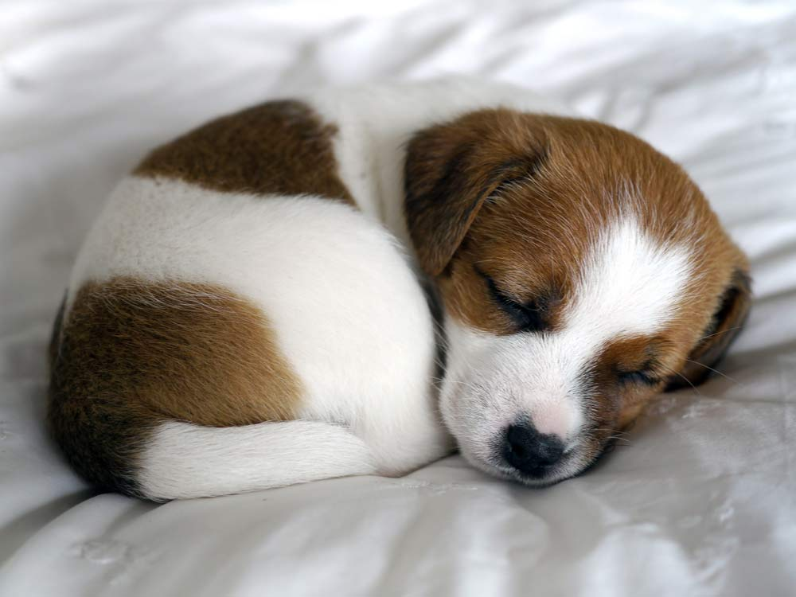

Image Maps

wikipedia says,
A puppy is a juvenile dog. Some puppies can weigh 1-1.5 kg (1-3 lb),
while larger ones can weigh up to 7–11 kg (15-23 lb). All healthy puppies
grow quickly after birth. A puppy's coat color may change as the puppy grows
older, as is commonly seen in breeds such as the Yorkshire Terrier. Puppy refers s
pecifically to young dogs,[1] while pup may be used for other animals such as seals,
giraffes, guinea pigs, rats or sharks.